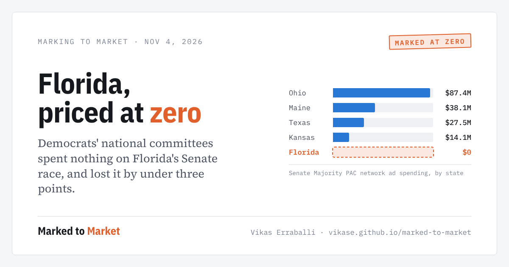
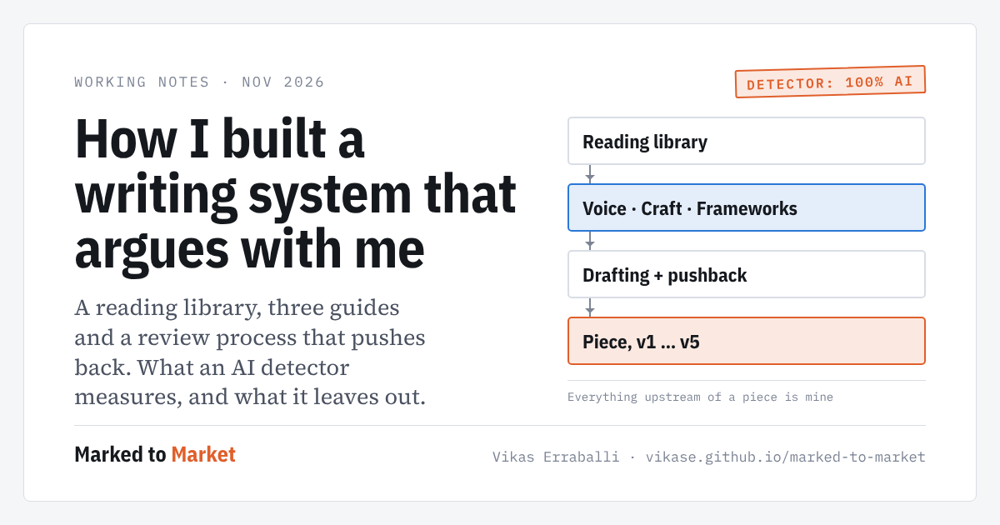

Essays on politics, money and power, written the way a risk desk holds a position: with a stated price, the strongest case against, and a promise to re-underwrite when the facts move.
Democrats flipped Texas, Kansas and South Carolina. In Florida the party's own committees never put a dollar into the Senate race and lost it by under three points. A ledger of what they spent, where, and when the price moved.

A reading library, three guides and a review process that pushes back. What a detector measures when it says "AI-written," and everything it leaves out.

Every piece lists its sources. Figures are drawn from the filings and results cited, and are updated when the record changes.